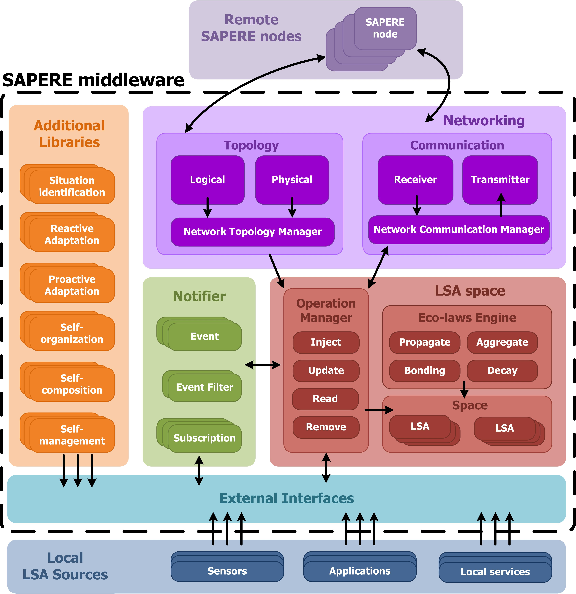

Sapere
The Sapere project was a project funded by the EU's Future and Emerging Technologies strand of Framework 7. The goal was to explore how to use nature-inspired computing techniques to implement scalable services adapted to their location and context. It was a consortium of five universities from across Europe:
- Università di Modena è Reggio Emilia IT (lead)
- Alma Mater Studiorum, Università di Bologna IT
- University of Geneva CH
- Johannes Kepler Universität Linz AT
- University of St Andrews UK
The project developed a middleware that exposed the endpoints of programs running in the system as packets of open data, called Live Semantic Annotations or LSAs, which were then operated on by a small set of declarative rules. This allowed a very decentralised approach to distributed systems, both in space and time: new components could join (or leave), with the system also responding autonomously to mobility and local failures.

We ran an instance of the middleware to host a user-facing application for the 2013 Vienna City Marathon, which tried to manage crowds of spectators wanting to watch the action and see their favourite runners.
The St Andrews' work package within the project explored how to do situation recognition in a distributed and scalable manner on top of the middleware architecture. We implemented both known and novel algorithms, driven by a changing pattern of sensors each represented by an LSA. This was a far more dynamic approach than had been tried before, and it led us to have to consider the impacts of partial failures in the sensors, poor and uneven coverage, which informed a lot of our subsequent work.
Publications
Simon Dobson, Mirko Viroli, José Luis Fernandez-Marquez, Franco Zambonelli, Graeme Stevenson, Giovanna di Marzo Serugendo, Sara Montagna, Danilo Pianini, Juan Ye, Gabriella Castelli, and Alberto Rosi. Spatial Awareness in Pervasive Ecosystems. The Knowledge Engineering Review 31, pp.343–366. 2016.
Juan Ye, Graeme Stevenson, and Simon Dobson. KCAR: A Knowledge-Driven Approach for Concurrent Activity Recognition. Pervasive and Mobile Computing 19, pp.47–70. May 2015.
Franco Zambonelli, Andrea Omicini, Bernhard Anzengruber, Gabriella Castelli, Francesco DeAngelis, Giovanna di Marzo Serugendo, Simon Dobson, José-Luis Fernandez Marquez, Alois Ferscha, Marco Mamei, Stefano Mariani, Ambra Molesini, Sara Montagna, Jussi Nieminen, Danilo Pianini, Alberto Rosi, Graeme Stevenson, Mirko Viroli, and Juan Ye. Developing Pervasive Multiagent Systems with Nature-Inspired Co-Ordination. Pervasive and Mobile Computing 17, pp.236–252. 2015.
Juan Ye, Graeme Stevenson, and Simon Dobson. USMART: An Unsupervised Semantic Mining Activity Recognition Technique. ACM Transactions on Intelligent Interaction Systems 4. 2014.
José Luis Fernandez-Marquez, Giovanna di Marzo Serugendo, Graeme Stevenson, Juan Ye, Simon Dobson, and Franco Zambonelli. Self-Management of Self-Organising Mobile Computing Applications: A Separation of Concerns Approach. In Proceedings of the 29th ACM Symposium on Applied Computing. Gyeongju, KR. 2014.
Graeme Stevenson, Gabriella Castelli, Juan Ye, Alberto Rossi, Simon Dobson, and Franco Zambonelli. A Bio-Chemically Inspired Approach to Awareness in Pervasive Systems. In Proceedings of First International Workshop on Sensing and Big Data Mining (SenseMine 2013). Rome, IT. 2013.
Graeme Stevenson, Juan Ye, Simon Dobson, Danilo Pianini, Sara Montagna, and Mirko Viroli. Combining Self-Organisation, Context-Awareness and Semantic Reasoning: The Case of Resource Discovery in Opportunistic Networks. In Proceedings of the 28th ACM Symposium on Applied Computing. Coimbra, PT. 2013.
Juan Ye and Simon Dobson. Pervasive Computing Needs Better Situation-Awareness. Awareness Magazine. 2012.
Juan Ye, Simon Dobson, and Susan McKeever. Situation Identification Techniques in Pervasive Computing: A Review. Pervasive and Mobile Computing 8, pp.36–66. 2012.
Graeme Stevenson, Jose Luis Fernandez-Marquez, Sara Montagna, Alberto Rosi, Giovanna di Marzo Serugendo Juan Ye, Mirko Viroli, Simon Dobson, and Akla-Esso Tchao. Towards Situated Awareness in Urban Networks: A Bio-Inspired Approach. In Proceedings of the First International Workshop on Adaptive Service Ecosystems: Nature and Socially Inspired Solutions (ASENSIS’12), pp.53–58. Lyons, FR. 2012.
Mirko Viroli, Franco Zambonelli, Graeme Stevenson, and Simon Dobson. From SOA to Pervasive Service Ecosystems: An Approach Based on Semantic Web Technologies. In Adaptive Web Services for Modular and Reusable Software Development: Tactics and Solutions. Javier Cubo and Guadalupe Ortiz, editors. IGI Global. ISBN 1-466-620897. 2012.
Graeme Stevenson, Mirko Viroli, Juan Ye, Sara Montagna, and Simon Dobson. Self-Organising Semantic Resource Discovery for Pervasive Systems. In Proceedings of the First International Workshop on Adaptive Service Ecosystems: Nature and Socially Inspired Solutions (ASENSIS’12), pp.47–52. Lyons, FR. 2012.
Simon Dobson and Aaron Quigley. Healthcare in a Pervasive World. In This Pervasive Day: The Potentials and Perils of Pervasive Computing, pp.99–111. Jeremy Pitt, editor. Imperial College Press. ISBN 1-848-167482. 2012.
Jose Luis Fernandez-Marquez, Graeme Stevenson, Akla-Esso Tchao, Juan Ye, Giovanna di Marzo Serugendo, and Simon Dobson. Analysis of New Gradient Based Aggregation Algorithms for Data-Propagation in Distributed Networks. In Proceedings of the First International Workshop on Adaptive Service Ecosystems: Nature and Socially Inspired Solutions (ASENSIS’12). Lyons, FR. 2012.
Juan Ye, Graeme Stevenson, and Simon Dobson. A Top-Level Ontology for Smart Environments. Pervasive and Mobile Computing 7, pp.359–378. 2011.
Alberto Rosi, Simon Dobson, Marco Mamei, Graeme Stevenson, Juan Ye, and Franco Zambonelli. Social Sensors and Pervasive Services: Approaches and Perspectives. In Proceedings of the Second IEEE Workshop on Pervasive Collaboration and Social Networking (PerCol 2011), pp.252–530. IEEE Press. Seattle, WA. 2011.
Graeme Stevenson and Simon Dobson. Sapphire: Generating Java Runtime Artefacts from OWL Ontologies. In Proceedings of the 3rd International Workshop on Ontology-Driven Information Systems Engineering (ODISE 2011), pp.425–236. London, UK. 2011.
Franco Zambonelli, Gabrialla Castelli, Laura Ferrari, Marco Mamei, Alberto Rosi, Giovanna di Marzo Serugendo, Matteo Risoldi, Akla-Esso Tchao, Simon Dobson, Graeme Stevenson, Juan Ye, Elena Nardini, Andrea Omicini, Sara Montagna, Mirko Viroli, Alois Ferscha, Sascha Maschek, and Bernhard Wally. Self-Aware Pervasive Service Ecosystems. Procedia Computer Science 7, pp.197–199. 2011.